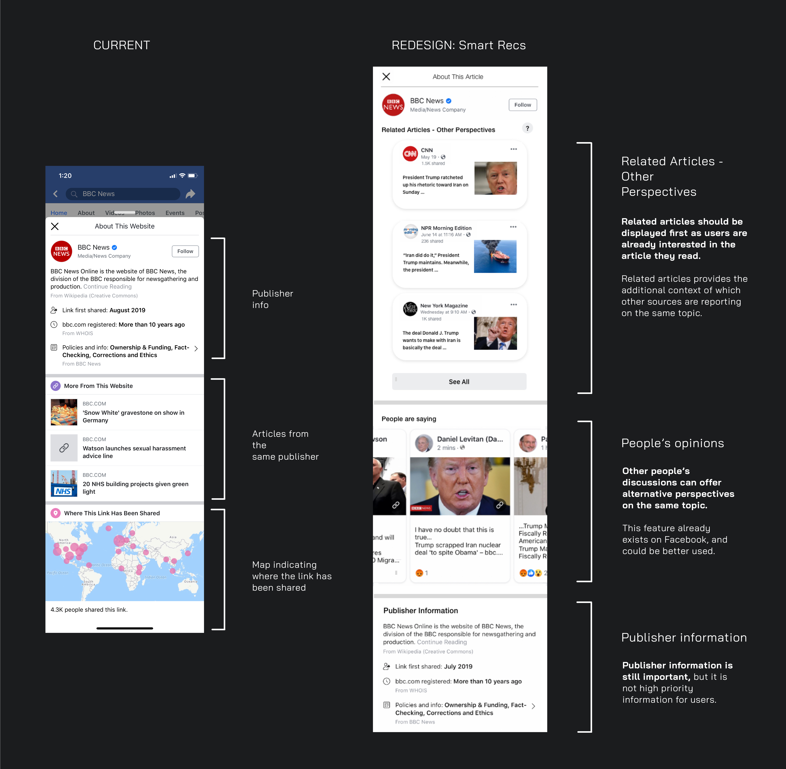

The Weekend Break
UX + UI Design
PS. I'm not affliated with Airbnb nor does this project represent them in any way.
The Weekend Break is an Airbnb redesign project that aims to explore the concept of end-to-end travel. While many people enjoy the excitement of travelling, the planning and transportation process within travelling can be stressful and difficult.
The Weekend Break aims to reframe two common obstacles in travelling: time & money. This conceptual design aims to optimize the limited time that individuals have within a local context.
Early insights.
Without pre-existing insights, I decided to survey 35 individuals to understand what were their frustrations with the journey of travelling, from start to finish. My goal was to identify and understand common pain points and their current workarounds.

Key notes.
In addition, almost all of the people interviewed commented that the top 2 constraints of travelling were time and money. Travel is considered as a project that has to be well planned in advance, by saving money and freeing time in advance. But what if we made travel more accessible and easy for everyone at anytime?
Tackle the constraints.
Similar to how Airbnb is currently displaying listings, only a limited number of listings are shown unless you enter dates and number of guests. This allows Airbnb full transparency from the beginning of the booking process, without having to list estimations of end-to-end prices.
In addition, this can take into account accomodations and transportation methods that are available and appropriately priced (including seasonal influx, number of individuals transported, mode of transportation, etc).
It’s clear that fake news can be hard to distinguish for any user. However, it’s not Facebook’s place to determine what is considered fake news, which leaves a lot of ambiguity and work to the viewer of the article.
How can we reduce cognitive overload and ease information processing in a neutral and intuitive manner?
Redesign 01 - Story Context
In this case, I propose that increased friction can be a solution to help induce critical analysis in users, and actually reduce friction in information processing.
Story Context: a brief slideshow overlay with critical details is displayed over the article image on auto-scroll.
This interaction is triggered by viewport position and hover duration over the article.
“It takes more information to make you believe something you don’t want to believe than something you do” APA Fact Check

I choose a moving slideshow so that users are aware of the changing information on their screens, even if they were not initially paying attention to it.
Again, the purpose of this forced friction experience is to strongly suggest users to pay more attention to critical, useful elements of the post for the purpose of combating fake news.
It’s probably not possible to make everyone critical thinkers, but we can make the process of analysing information easier, and to do so in a neutral manner.
Redesign 02 - Smart Recs
Now, I think that Facebook’s ‘information button’ is a pretty powerful tool for providing users with more contextual information. I just think that it’s not being optimized to its best potential.
I decided to keep with the bubble-esque effect that is currently in use for some of Facebook’s content.
* People's opinions:
When I was exploring Facebook Newsfeed and Pages + Groups, I noticed that there was an ‘opinions’ section when you search for certain key terms eg. Trump.

I've never seen this before until now
However, one critique of this is that it actually may not helpful because some users may post offensive or biased opinions. Furthermore, it might just show the perspectives of users that actually post things on their walls, which is not reflective of all opinions about a topic.
Potential solution: a live, public discourse space where Facebook posts made by politicians, influencers or other types of agencies are shared instead of people's opinions.
Redesign 03 - Past Read Insights
I think it might be helpful if Facebook automatically compiles articles that you’ve been reading (or even been exposed to), and sets a space where you can see (compare) what articles other people are reading.
The purpose of this space to provide insights and opinions from different demographics (outside of your echo chamber).

This concept was inspired by The Wall Street Journal's Red Feed, Blue Feed. Although their project presents a very striking comparison of Facebook posts between liberals and conservatives, one constraint this is presentation is: who determines the range of political standing?
Ultimately, I believe a better focus is to gently encourage users to critically analyze by easing the way information is presented on Facebook Newsfeed.
Not only does this encourage better critical thinking for combatting fake news, these potential solutions will make it harder for fake content to pass as real news.
Going Forward.
Through this exploration, it has taught me to be careful of the subtle nuances in UX design, for example, how do you present information to users without being pushy? (eg. so that they don't leave one platform for another) Or allow the users to feel like they are in control of the information they are exposed to online in an unbiased way?
As a result of this project, I've come to understand that many problems are universal and affect people everywhere. How can we design in a way that can reduce these widespread problems everywhere?
Thanks for sticking it out to the end, I'll be updating this portfolio as fast as I can. Check back soon!